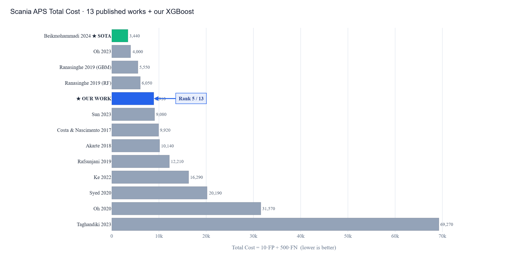
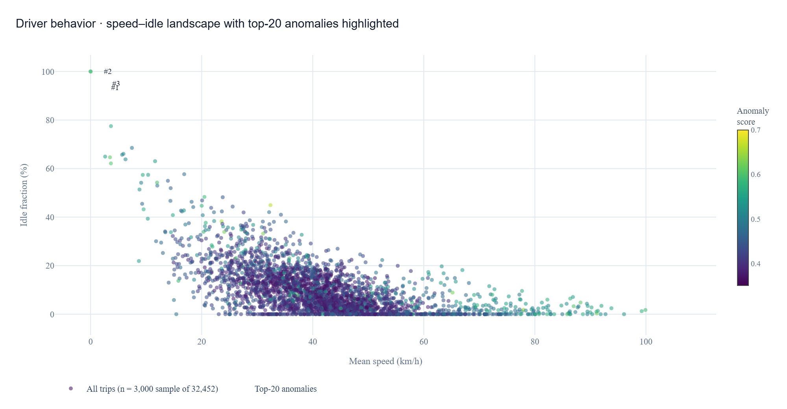
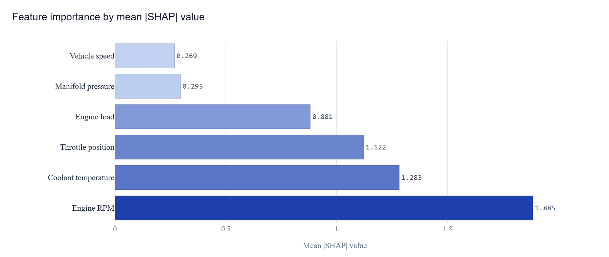
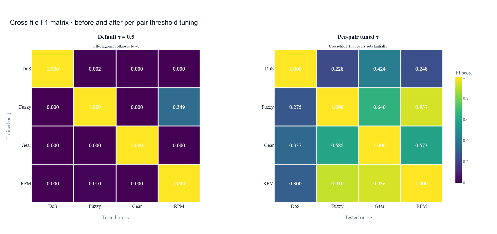
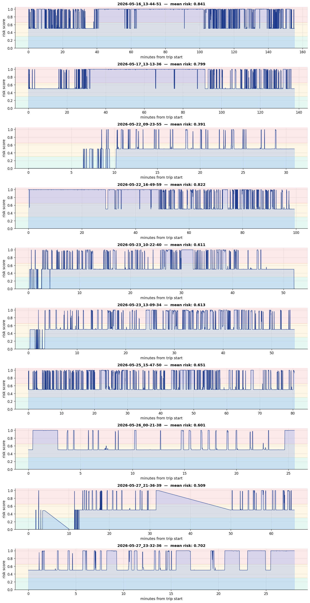
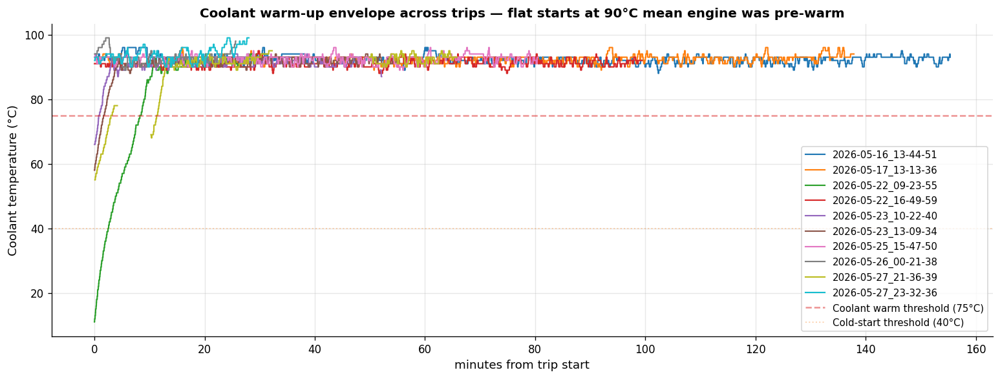

End-to-end machine-learning pipeline across four real-world vehicle datasets, with rigorous cost-sensitive evaluation and full client-side ONNX deployment. Try the interactive OBD-II stress detector below — it runs entirely in your browser.
Adjust the six sensor sliders and watch the model classify mechanical stress in real time. Three presets demonstrate canonical scenarios. Inference runs entirely in your browser through ONNX Runtime Web — no server required.
Public datasets feed four trained models. All export to ONNX — a portable format that runs anywhere, including directly in your browser. One pipeline, one model format, one runtime.
Industry-standard IDA 2016 cost matrix (FP = 10, FN = 500). One hyperparameter — the decision threshold — cuts Total Cost by 36% over the default. No resampling, no synthetic features, no two-stage hacks.

Isolation Forest on aggregated trip-level features from the Vehicle Energy Dataset (University of Michigan, 384 vehicles, 22.4M telemetry readings) identifies the most anomalous driving sessions across the fleet.

| Rank | Vehicle | Trip | Score | Speed mean | RPM max | Idle % | Duration |
|---|
XGBoost multiclass classifier trained on rule-based labels grounded in automotive engineering best practices. The interactive demo is at the top of this page.

Most published CAN-IDS papers report near-perfect F1 from single-file random splits. We trained 4 separate models — one per attack type — and tested each across all four attack files to quantify leakage.

Without cross-file evaluation, our CAN-IDS would have reported F1 = 1.0 — a number indistinguishable from the published state of the art, and equally useless in production. Quantifying the leakage gap is itself the contribution.
Models trained on synthetic labels need real-world validation. We collected our own OBD-II telemetry via a Vgate iCar Pro BLE 4.0 dongle and ran the deployed ONNX model — the same one used in the live demo above — on this field data.


Common questions about the methodology, terminology, and decisions in this work.
The Controller Area Network (CAN) is the internal communication backbone of virtually every modern vehicle. It connects the engine control unit (ECU), ABS, transmission, dashboard, airbags and dozens of other components on a single shared bus. Originally designed for closed environments, it has no built-in authentication — any node can broadcast messages. As vehicles gain cellular connectivity and OBD-II ports get exposed, adversaries can inject malicious CAN frames to manipulate sensor readings or disable safety systems.
The IDA 2016 Industrial Challenge defined an asymmetric cost matrix: a false positive (unnecessary inspection) costs 10 units, but a false negative (missed failure) costs 500 units — 50× more, reflecting real maintenance economics. Total Cost = 10·FP + 500·FN. Our model gets Total Cost = 8,910, ranking 5th out of 13 published works on the same evaluation. The default threshold τ=0.5 gives 14,180 — we cut it 36% just by tuning τ.
Data leakage happens when information from the test set inadvertently appears in the training set, inflating performance metrics artificially. A common case is "per-vehicle leakage": if you split data randomly, the same vehicle ends up in both train and test sets. The model memorizes per-vehicle signatures rather than learning general fault patterns. We measured this on OBD-II (36.9% gap) and on CAN (46.7% gap). Both are concrete numerical findings.
For tabular data with fewer than ~100K samples, XGBoost consistently outperforms neural networks (Shwartz-Ziv & Armon, 2022). It also trains faster, requires less hyperparameter tuning, and produces interpretable feature importances via SHAP. The state-of-the-art on Scania APS (Beikmohammadi 2024, Total Cost 3,440) is a Transformer, but with a 4-component pipeline (SMOTE + Focal Loss + Bayesian Ridge + Transformer) that requires 4-6 weeks to reproduce. We chose breadth over depth — 4 subsystems with honest methodology.
The public OBD-II dataset we use (Kaggle 14-drivers/14-cars) contains normal city driving — no labelled mechanical faults. Faulted vehicles are rare and not publicly shared. So we generate labels from engineering rules grounded in published references (Bosch Automotive Handbook, SAE J1979 PID specifications). This is a bootstrap step: the architecture is ready to accept real fault data the moment we collect it from instrumented vehicles. Future work explicitly scoped.
AUC stands for "Area Under the ROC Curve" — it measures how well the model separates two classes across all possible decision thresholds. 0.5 = random guessing, 1.0 = perfect separation. Our Scania APS model gets AUC = 0.9958 on 16,000 test trucks — meaning the model can almost always tell a healthy truck from a failing one, regardless of which probability threshold you pick.
ONNX (Open Neural Network Exchange) is a portable model format. We export our trained scikit-learn / XGBoost models to ONNX, and then ONNX Runtime Web runs them in any browser via WebAssembly. No backend, no data sent anywhere — your sensor readings (or slider values) are processed entirely on your device. Inference latency in your browser is around 50–500 µs per prediction. Server-side batch inference reaches 22 µs.
Nowhere. There is no server. The OBD-II stress detector model runs entirely in your browser via ONNX Runtime Web. The slider values are processed in WebAssembly on your computer. Nothing leaves your device. You can verify this by opening DevTools (F12) → Network tab while moving the sliders — no requests fire.
The VED dataset has no labelled faults — just driving telemetry from 384 vehicles. So we use Isolation Forest, an unsupervised algorithm that learns what "normal" trips look like and flags ones that deviate. The two clusters that emerge — prolonged-idle vehicles (V189, V169, V503) and aggressive drivers (V492, V545, V569) — were not pre-labelled. The model discovered them through coherent behavioral signatures.
Auyen Yeginbay & Altynbek Kabiyev, students at Astana IT University, School of Intelligent Systems. Scientific advisor: Assemgul Sadvakassova. Bachelor diploma project, 2026.